“Standing on the shoulders of giants.” — Isaac Newton
Research Interest
Building efficient, high-performing Vision-Language Models (VLMs), with focus on:
- Distillation / RL
- Agent
- Pruning
- Compression
- Data / Training / Inference Efficiency
Collaboration Requests & Job Applications
If your research interests align with mine and you already have a draft idea to discuss and develop together, feel free to reach out for collaboration. For university collaboration, alignment is the primary criterion. We are also actively looking for talented internship and full-time candidates. Preferred qualifications are strong first or co-first author publications at top-tier main-track conferences (not workshops) and deep expertise in one area. In my view, a strong profile means at least seven first or co-first author papers at top-tier venues (CVPR, ICCV, ECCV, NeurIPS, ICLR, ICML, ACL, EMNLP). Other conferences and journals are not considered. Since my current intern already passed this condition, I therefore maintain a high hiring bar. If you meet these criteria, click "Open Gmail" to open a pre-filled draft, attach your resume, and send. Applications are reviewed based on the resume only; additional email wording (e.g., "Hi", "Best regards", or self-promotion) is not considered. Please keep it as a brief cold email.
NVIDIA Research Intern Application
NVIDIA Research Full-time Application
Work Experience
NVIDIA
Research Scientist
Oct. 2025 — Current
-
LEAD
Masking Teacher and Reinforcing Student
[Completed]
—
Mask-progressive RL distillation that gradually unmasks teacher weights and uses offline RL with accuracy & distillation rewards.
CVPR 2026 Accept U.S. Non-Provisional Patent Filed ArXiv Release Internal Release
-
LEAD
GenRecal
[Completed]
—
Cross-architecture VLM distillation via a Recalibrator that aligns heterogeneous token representations regardless of vocabulary, token splits, or index ordering.
Under Review U.S. Patent Upgraded to Non-Provisional Internal Tech Transfer
-
LEAD
Unified RL & Imitation Learning for VLMs
[Completed]
—
Combines RL with adversarial imitation, using an LLM-based discriminator and multi-teacher guidance to build lightweight yet powerful VLMs.
NeurIPS 2025 Accept U.S. Patent Upgraded to Non-Provisional ArXiv Release Internal Release
NVIDIA
Research Intern
Oct. 2024 — Oct. 2025
-
LEAD
VLsI: Verbalized Layers-to-Interactions
[Completed]
—
Layer-wise distillation using intermediate verbalizers, enabling small VLMs (2B/7B) to align with large VLMs' reasoning progression and outperform GPT-4V.
CVPR 2025 Accept U.S. Non-Provisional Patent Filed ArXiv Release Internal Release Internal Tech Transfer
-
LEAD
GenRecal
[Initiated]
—
Initial design of the Recalibrator framework for cross-tokenizer VLM distillation; first proof-of-concept and internal demo.
U.S. Provisional Patent Filed ArXiv Release Internal Release
-
LEAD
Unified RL & Imitation Learning for VLMs
[Initiated]
—
First formulation of the RL + adversarial imitation training pipeline; initial experiments and team setup.
U.S. Provisional Patent Filed
Education
KAIST
Mar. 2020 — Aug. 2025
Ph.D., School of Electrical Engineering GPA 3.77 / 4.3
Dissertation: Building High-performing, Efficient-size Vision Language Models: Merge, Modify, and Distill
[Link]
[Degree Certificate]
KAIST
Mar. 2018 — Feb. 2020
M.S., The Cho Chun Sik Graduate School of Green Transportation GPA 3.72 / 4.3
Thesis: Training Encoder-Attention through Fully-Connected CRFs for Efficient End-to-End Lane Detection Model
[Link]
[Degree Certificate]
Hanyang University
Mar. 2014 — Feb. 2018
B.S., Mathematics and Electronic Engineering GPA 3.86 / 4.5
Publications
| Overall | 16 Accepts · 3 Pending · 2 Tech Reports |
| Computer Vision | 5 CVPR · 2 ICCV · 1 ECCV · 1 ICIP |
| Machine Learning | 3 NeurIPS · 1 ICLR |
| NLP | 1 ACL · 1 EMNLP |
| Journal | 1 Pattern Recognition |
Publication Profile
76%
24%
- First & Corresponding Author 16 / 21 = 76%
- Co-Author 5 / 21 = 24%
-
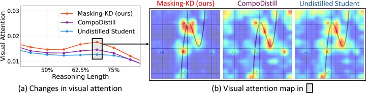
-
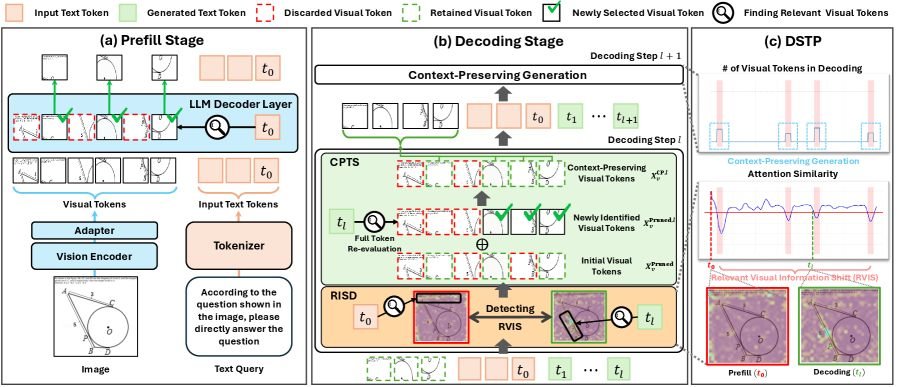
-
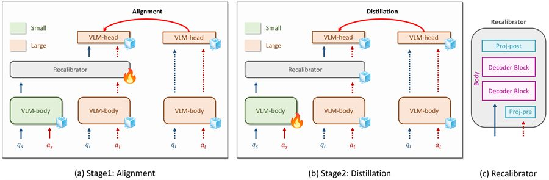
-
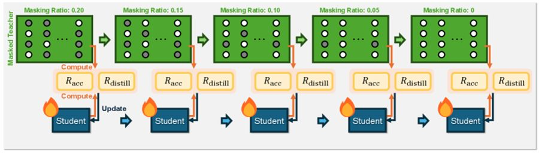
"Masking Teacher and Reinforcing Student for Distilling Vision-Language Models"IEEE/CVF Conference on Computer Vision and Pattern Recognition (CVPR), 2026 [Paper]U.S. Patent Application Filed (Non-Provisional), NVIDIA Research, 2026 -
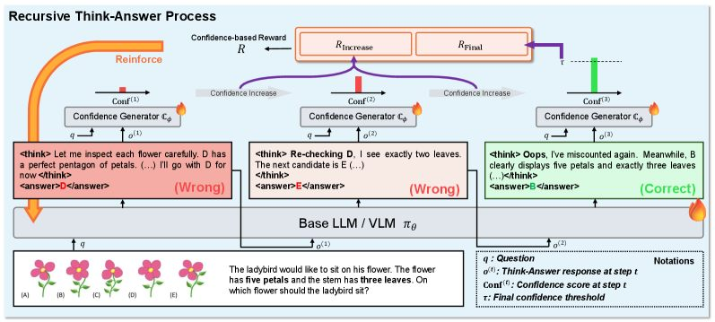
-
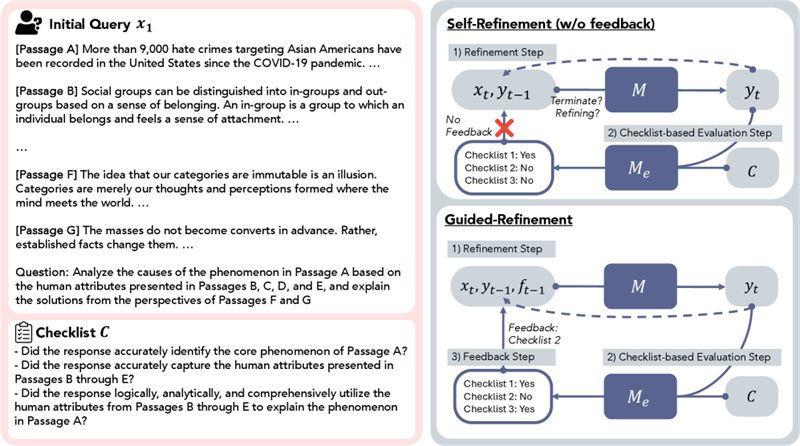
-
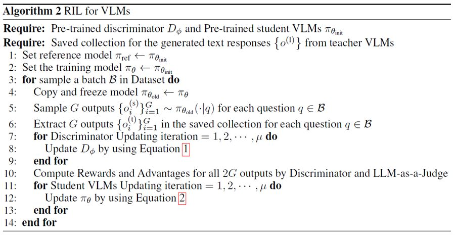
-
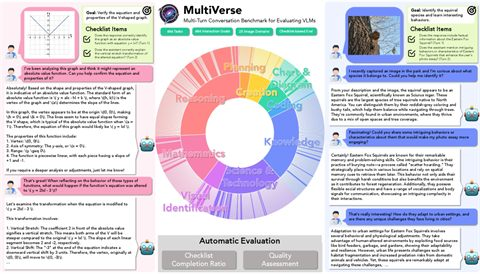
-
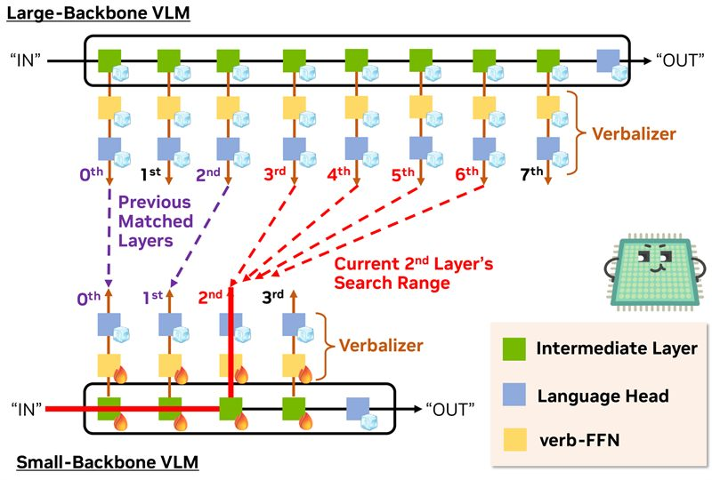
-
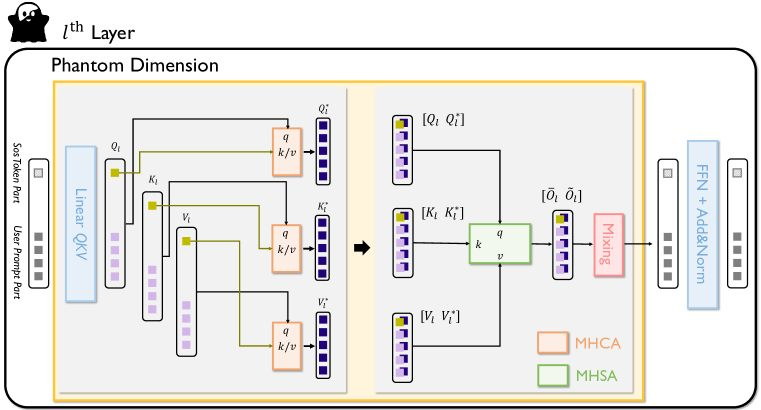
-
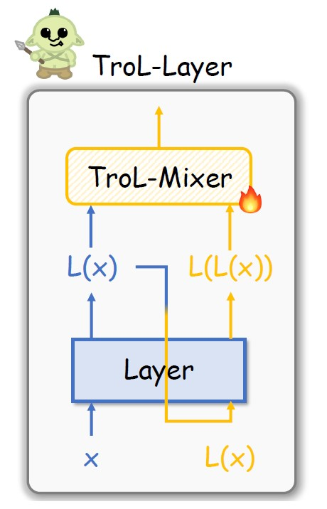
-
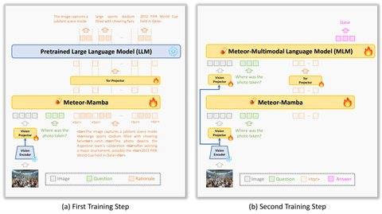
-
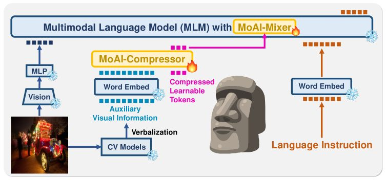
-
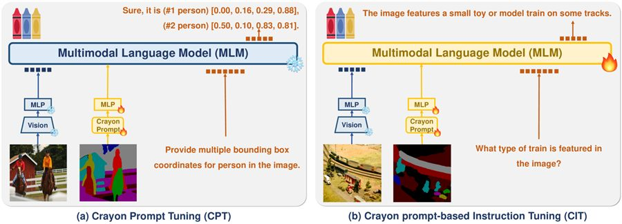
-
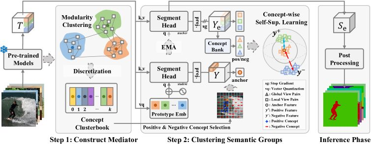
-
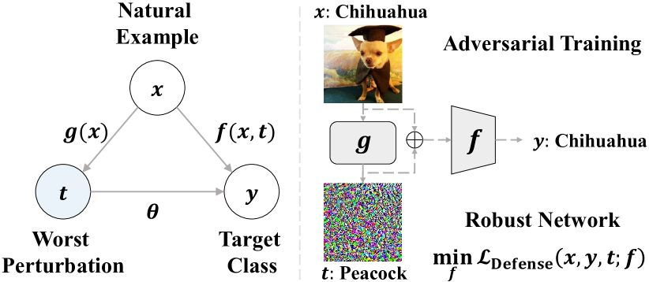
-
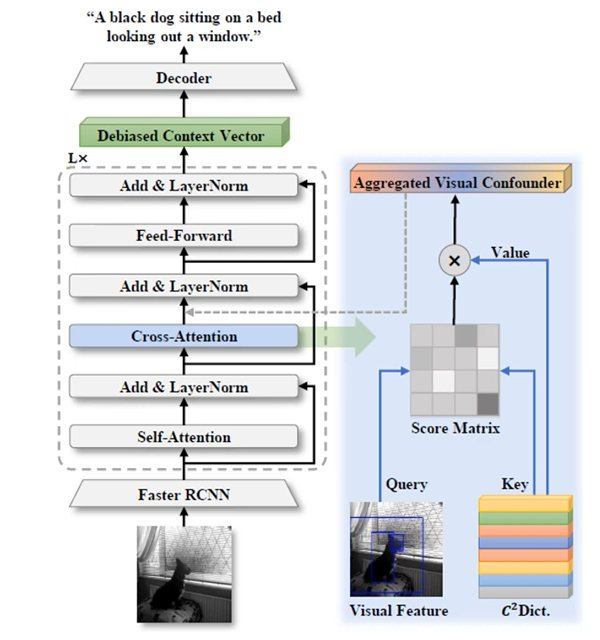
-
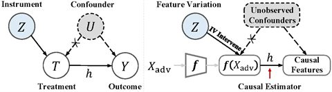
-
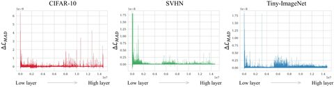
-
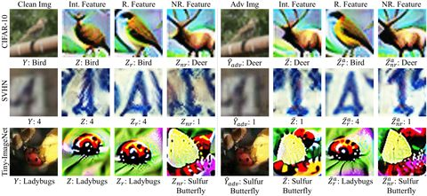
-
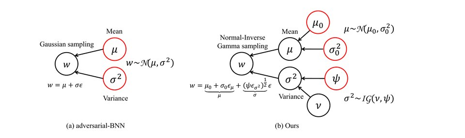
Reviewer Experience
Journal
- IEEE Transactions on Pattern Analysis and Machine Intelligence (TPAMI)
- IEEE Transactions on Neural Networks and Learning Systems (TNNLS)
- IEEE Transactions on Circuits and Systems for Video Technology (TCSVT)
Conference
- IEEE/CVF Conference on Computer Vision and Pattern Recognition (CVPR)
- International Conference on Computer Vision (ICCV)
- European Conference on Computer Vision (ECCV)
- International Conference on Learning Representations (ICLR)
- Neural Information Processing Systems (NeurIPS)
- International Conference on Machine Learning (ICML)
- AAAI Conference on Artificial Intelligence (AAAI)
- Association for Computational Linguistic (ACL)
- Empirical Methods in Natural Language Processing (EMNLP)
Invited Talks & Awards
- Silver Reviewer Award, International Conference on Machine Learning (ICML)2026
- Best Runner-Up Award (Oral, Top 1%), Multi-Turn Interactions in LLMs Workshop @ NeurIPS2025
- Invited Talk at Kongju University2025
- Invited Talk at Hanyang University ERICA2025
- Invited Talk at Kookmin University2025
- Invited Talk at Dongseo University2025
- 31st Samsung HumanTech Paper Awards in Computer Science & Engineering2025
- KCC XAI Workshop, Best Paper Awards2024
- Invited Talk at Korea Institute of Science and Technology Information (KISTI)2024
- Invited Talk at NAVER HyperCLOVA X2024
- Invited Talk at Kakao Brain2024
- 1st Award for Research Presentation, Center for Applied Research in AI (CARAI)2023
- GIRE Research Mentor, Seoul International School — "MUsE", Journal of Student Research [Publication]2023
- KAIST SW IT Academy, AI Project Director of 1st Award Topic2023
- Invitation to Presenter in Korean Conference on Computer Vision (KCCV)2023
- KAIST SW IT Academy, Lecturer of Data Structure & Algorithm, Deep Learning, Computer Vision2023
- Invitation to Presenter in Korean Conference on Computer Vision (KCCV)2022
- 2nd Award for Research Presentation, Center for Applied Research in AI (CARAI)2022
- KAIST FellowshipMar. 2020 — Feb. 2024
- National Government FellowshipMar. 2018 — Feb. 2020
- 1st President's Award for International Autonomous Vehicle Competition, Team Leader [YouTube][Talk]2018
NVIDIA Stock
Current Price & Today Change
TradingView